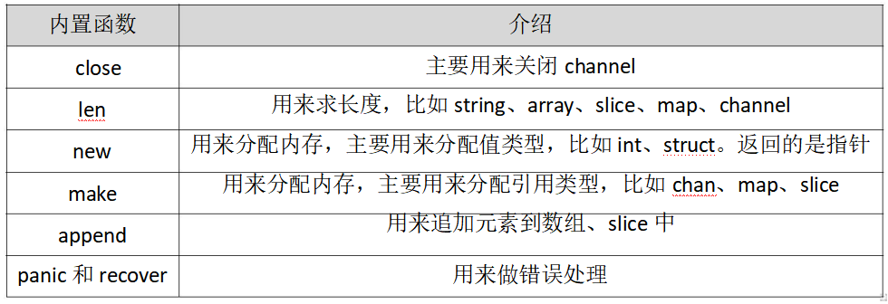
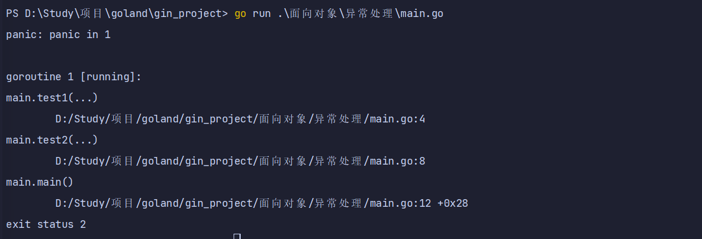
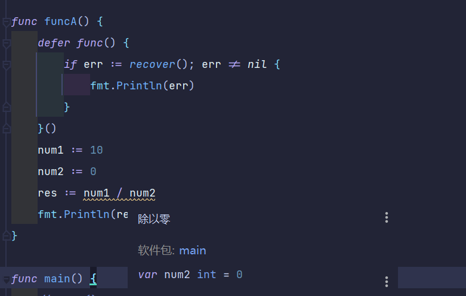
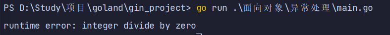
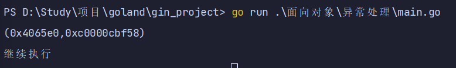

异常处理
1. 异常处理介绍
1.1. go中异常处理介绍
- Golang 没有结构化异常，使用 panic 抛出错误，recover 捕获错误。
- Go中可以抛出一个panic的异常，然后在defer中通过recover捕获这个异常，然后正常处理。
- panic可以在任何地方引发，但 recover 只有在 defer 调用的函数中有效。

1.2. panic
- 1、内置函数
- 2、假如函数F中书写了panic语句，会终止其后要执行的代码，在panic所在函数F内如果存在要执行的defer函数列表，按照defer的逆序执行
- 3、返回函数F的调用者G，在G中，调用函数F语句之后的代码不会执行，假如函数G中存在要执行的defer函数列表，按照defer的逆序执行
- 4、直到goroutine整个退出，并报告错误
1.3. recover
- 1、内置函数
- 2、用来控制一个goroutine的panicking行为，捕获panic，从而影响应用的行为
- 3、一般的调用建议
- a). 在defer函数中，通过recever来终止一个goroutine的panicking过程，从而恢复正常代码的执行
- b). 可以获取通过panic传递的error
1.4. 注意
- 利用recover处理panic指令，defer 必须放在 panic 之前定义，另外 recover 只有在 defer 调用的函数中才有效。
- 否则当panic时，recover无法捕获到panic，无法防止panic扩散。
- recover 处理异常后，逻辑并不会恢复到 panic 那个点去，函数跑到 defer 之后的那个点。
- 多个 defer 会形成 defer 栈，后定义的 defer 语句会被最先调用。
2. panic/recover异常处理
2.1. panic触发程序奔溃
- 程序运行期间 funcB 中引发了 panic 导致程序崩溃，异常退出了。
- 这个时候我们就可以通过recover 将程序恢复回来，继续往后执行。
package main
func test1() {
panic("panic in 1")
}
func test2() {
test1()
}
func main() {
test2()
}

2.2. defer 、recover 实现异常处理
- recover()必须搭配 defer 使用
- defer 一定要在可能引发 panic 的语句之前定义
package main
import "fmt"
func funcA() {
defer func() {
if err := recover(); err != nil {
fmt.Println(err)
}
}()
num1 := 10
num2 := 0
res := num1 / num2
fmt.Println(res)
}
func main() {
funcA()
}


2.3. defer 、panic、recover 抛出异常
package main
import (
"errors"
"fmt"
)
func readFile(fileName string) error {
if fileName == "main.go" {
return nil
}
return errors.New("读取文件错误")
}
func main() {
defer func() {
if err := recover(); err != nil {
fmt.Println(err)
}
}()
var err = readFile("xxx.go")
if err != nil {
println(err)
}
fmt.Println("继续执行")
}

参数替换为 main.go